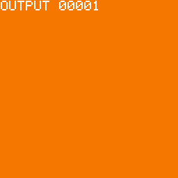
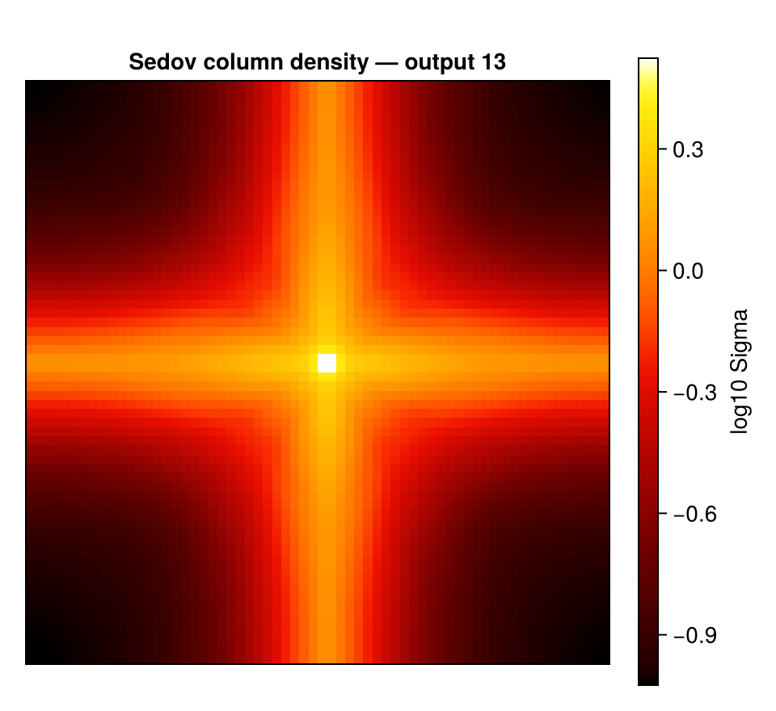

Movies (getmovie / savemovie)
This page is also an executable Jupyter notebook — open / download movie.ipynb. The notebooks run end-to-end and double as part of Mera's test suite.
getmovie projects a quantity for every output of a simulation and collects the maps into the frames of a movie; savemovie writes them to an animated GIF. It builds on the same machinery as timeseries (one snapshot resident at a time, RAM-safe) and the projection engine, with the view held fixed so the movie is steady.

This notebook runs on the timeseries_sedov3d test run (a 3-D Sedov blast, 13 outputs). All file outputs are written to a temporary directory.
# Example-data root. Point this at your own simulation folder, or set the
# MERA_EXAMPLES environment variable; every path below is built from it.
MERA_EXAMPLES = get(ENV, "MERA_EXAMPLES", "/Volumes/FASTStorage/Simulations/Mera-Tests");
using Mera
run = joinpath(MERA_EXAMPLES, "RAMSES/timeseries_sedov3d")
tmp = mktempdir()
println("temp output dir : ", tmp)
# one column-density frame per output (numeric maps, no files written)
m = getmovie(run, :sd)
println("frames : ", length(m.frames))
println("frame size : ", size(m.frames[1]))
println("output numbers : ", m.outputs)*__ __ _______ ______ _______
| |_| | | _ | | _ |
| | ___| | || | |_| |
| | |___| |_||_| |
| | ___| __ | |
| ||_|| | |___| | | | _ |
|_| |_|_______|___| |_|__| |__|
Mera v1.8.0
temp output dir : /var/folders/k5/gw4hqgwj5_qf8sljz0091x1m0000gp/T/jl_eZIOfp
getmovie: 13 frame(s) of :sd from "/Volumes/FASTStorage/Simulations/Mera-Tests/RAMSES/timeseries_sedov3d"
[1/13] output 00001
[2/13] output 00002
[3/13] output 00003
[4/13] output 00004
[5/13] output 00005
[6/13] output 00006
[7/13] output 00007
[8/13] output 00008
[9/13] output 00009
[10/13] output 00010
[11/13] output 00011
[12/13] output 00012
[13/13] output 00013
frames : 13
frame size : (64, 64)
output numbers : [1, 2, 3, 4, 5, 6, 7, 8, 9, 10, 11, 12, 13]How it works (no scratch images)
The pipeline is simulation outputs → in-memory numeric maps → one GIF — it does not write a folder of PNGs and stitch them, and it does not read existing image files:
getmovieloops the outputs, loading one snapshot at a time (released before the next, liketimeseries), andprojections each into an in-memory 2-D numeric array (Matrix{Float64}). These accumulate inm.frames— no files are written.savemovietakes those numeric frames, applies the log/colormap/normalisation, and writes a single animated GIF in oneFileIO.savecall (using the bundled FileIO/Images — no extra package). No per-frame temp files.
The frames stay numeric, so you can post-process them or render them yourself. If you do want the individual images on disk, ask for them — savemovie(...; save_frames="dir/") writes each rendered frame as a PNG (see Scratch frames) — and moviefromframes goes the other way, building a movie from images already on disk.
Orientation: off-axis movies
getmovie uses the full projection view, held fixed across frames so the movie is steady. It's axis-aligned by default (direction=:z), but every off-axis control that projection offers works here too:
# 1. a line of sight from the auto-frame (face-on / edge-on)
ref = gethydro(getinfo(1, "/data/sim"))
fr = face_on(ref)
m = getmovie("/data/sim", :sd; los=fr.los, up=fr.up, center=fr.center, range_unit=fr.center_unit)
# 2. by viewing angles (the off-axis camera)
m = getmovie("/data/sim", :sd; inclination=60, azimuth=30) # degrees by default
m = getmovie("/data/sim", :sd; theta=45, phi=20, position_angle=15)
# 3. auto face-on from the gas angular momentum, recomputed per frame
m = getmovie("/data/sim", :sd; axis=:angmom)The view is the same for every frame (so the camera doesn't wander) — except axis=:angmom, which re-derives the face-on orientation from each snapshot's own angular momentum.
res, lmax, and the xrange/yrange/zrange region keywords cut the cost (and memory) of each frame. outputs selects which snapshots (:all, a range, or a vector), and mera_files=true reads output_*.jld2 mera files instead of RAMSES outputs — exactly as in timeseries.
Save to a GIF
savemovie takes the numeric frames, applies the log/colormap/normalisation, and writes a single animated GIF. tags=:output burns the output number onto each frame.
gif = joinpath(tmp, "density.gif")
savemovie(m, gif; tags=:output)
println("wrote GIF : ", gif, " (", filesize(gif), " bytes)") frame 1: output 00001
frame 2: output 00002
frame 3: output 00003
frame 4: output 00004
frame 5: output 00005
frame 6: output 00006
frame 7: output 00007
frame 8: output 00008
frame 9: output 00009
frame 10: output 00010
frame 11: output 00011
frame 12: output 00012
frame 13: output 00013
savemovie: wrote 13 frames → /var/folders/k5/gw4hqgwj5_qf8sljz0091x1m0000gp/T/jl_eZIOfp/density.gif
wrote GIF : /var/folders/k5/gw4hqgwj5_qf8sljz0091x1m0000gp/T/jl_eZIOfp/density.gif (41062 bytes)Saving: colormap, scaling, steady brightness
gif2 = joinpath(tmp, "density_gray.gif")
savemovie(m, gif2;
colormap = :gray,
log = true,
colorrange = :global,
clip = (0.0, 0.999),
tags = :time, # "t = … Myr" on each frame
fps = 8)
println("wrote : ", gif2, " (", filesize(gif2), " bytes)") frame 1: t=0.0 Myr
frame 2: t=5.332e-16 Myr
frame 3: t=1.061e-15 Myr
frame 4: t=1.591e-15 Myr
frame 5: t=2.123e-15 Myr
frame 6: t=2.649e-15 Myr
frame 7: t=3.176e-15 Myr
frame 8: t=3.708e-15 Myr
frame 9: t=4.24e-15 Myr
frame 10: t=4.769e-15 Myr
frame 11: t=5.302e-15 Myr
frame 12: t=5.822e-15 Myr
frame 13: t=6.352e-15 Myr
savemovie: wrote 13 frames → /var/folders/k5/gw4hqgwj5_qf8sljz0091x1m0000gp/T/jl_eZIOfp/density_gray.gif
wrote : /var/folders/k5/gw4hqgwj5_qf8sljz0091x1m0000gp/T/jl_eZIOfp/density_gray.gif (42812 bytes)colorrange=:global(default) computes a single range over all frames, so the movie doesn't flicker as the peak grows. Use:perframeto stretch each frame independently, or pass an explicit(lo, hi)(in log space whenlog=true).colormapis:fireor:grayout of the box (no colour-package dependency), or any function mappingt∈[0,1]to an(r, g, b)tuple — e.g. plug in aColorSchemes/Makie colormap if you have one loaded.
Tags: a timestamp or label on each frame
Pass tags to label every frame. The labels are printed as the movie is written and, with annotate=true (the default), burned onto the frames with a small built-in bitmap font (top-left, no font dependency).
tags accepts:
:time→ the frame's physical time and unit;:output→ its output number;- a vector of strings (one per frame) — any custom caption you like;
- a function
k -> String(frame index → label), e.g.k -> "z = $(redshifts[k])"; - a tuple of any of the above to stack multiple lines, e.g.
tags=(:output, :time).
Control how the labels look — all optional, with sensible defaults:
| keyword | default | options |
|---|---|---|
tag_scale | :auto | :auto (scales with the frame) or an integer font size |
tag_position | :topleft | :topleft, :topright, :bottomleft, :bottomright, or (row, col) |
tag_color | :white | :white, :yellow, :red, :cyan, :green, :black, an RGB, or (r,g,b) |
gif3 = joinpath(tmp, "density_tagged.gif")
captions = ["frame $(k)/$(length(m.frames))" for k in 1:length(m.frames)]
savemovie(m, gif3;
tags = (:output, :time), # two stacked lines
tag_position = :bottomright,
tag_color = :yellow)
println("two-line tags : ", basename(gif3))
gif4 = joinpath(tmp, "density_custom.gif")
savemovie(m, gif4; tags = captions) # custom per-frame strings
println("custom tags : ", basename(gif4)) frame 1: output 00001 | t=0.0 Myr
frame 2: output 00002 | t=5.332e-16 Myr
frame 3: output 00003 | t=1.061e-15 Myr
frame 4: output 00004 | t=1.591e-15 Myr
frame 5: output 00005 | t=2.123e-15 Myr
frame 6: output 00006 | t=2.649e-15 Myr
frame 7: output 00007 | t=3.176e-15 Myr
frame 8: output 00008 | t=3.708e-15 Myr
frame 9: output 00009 | t=4.24e-15 Myr
frame 10: output 00010 | t=4.769e-15 Myr
frame 11: output 00011 | t=5.302e-15 Myr
frame 12: output 00012 | t=5.822e-15 Myr
frame 13: output 00013 | t=6.352e-15 Myr
savemovie: wrote 13 frames → /var/folders/k5/gw4hqgwj5_qf8sljz0091x1m0000gp/T/jl_eZIOfp/density_tagged.gif
two-line tags : density_tagged.gif
frame 1: frame 1/13
frame 2: frame 2/13
frame 3: frame 3/13
frame 4: frame 4/13
frame 5: frame 5/13
frame 6: frame 6/13
frame 7: frame 7/13
frame 8: frame 8/13
frame 9: frame 9/13
frame 10: frame 10/13
frame 11: frame 11/13
frame 12: frame 12/13
frame 13: frame 13/13
savemovie: wrote 13 frames → /var/folders/k5/gw4hqgwj5_qf8sljz0091x1m0000gp/T/jl_eZIOfp/density_custom.gif
custom tags : density_custom.gifSet annotate=false to print the labels without drawing them on the frames.
Save and reload the movie object
Computing the frames (especially at high resolution over many outputs) is the expensive part. Persist the MeraMovie to a JLD2 file — the same Julia-native way savemap stores a map — and reload it later with loadmovie, without re-running getmovie:
jld = joinpath(tmp, "density.jld2")
savemovie(m, jld) # .jld2 ⇒ persists the object
m2 = loadmovie(jld)
println("reloaded frames: ", length(m2.frames), " (identical: ", length(m2.frames) == length(m.frames), ")")Saved MeraMovie (13 frames) → /var/folders/k5/gw4hqgwj5_qf8sljz0091x1m0000gp/T/jl_eZIOfp/density.jld2
Loaded MeraMovie (13 frames) ← /var/folders/k5/gw4hqgwj5_qf8sljz0091x1m0000gp/T/jl_eZIOfp/density.jld2
reloaded frames: 13 (identical: true)savemovie switches on the extension: .gif encodes a movie, .jld2 persists the object.
Scratch frames — keep the PNGs
Set save_frames to a directory and savemovie also writes every rendered frame as frame_00001.png, frame_00002.png, … there (the GIF is still written too):
savemovie(m, "density.gif"; tags=:output, save_frames="frames/")
# frames/frame_00001.png … frames/frame_00013.pngBuild a movie from existing images
The complement: moviefromframes assembles a GIF from image files already on disk — the PNGs from save_frames, or frames you rendered yourself:
moviefromframes("frames/", "movie.gif"; fps=12) # sorts by name, stacks, encodesThis is the "use existing images to make a movie" path — so you can render publication-quality frames with CairoMakie (axes, a colourbar, your own annotations), save them as PNGs, and turn them into a GIF, or feed them to ffmpeg for an MP4:
using CairoMakie
framedir = joinpath(tmp, "frames"); mkpath(framedir)
for (k, A) in enumerate(m.frames)
f = Figure(size = (320, 300))
ax = Axis(f[1,1]; aspect = DataAspect(),
title = "t = $(round(m.times[k], digits=3))")
hidedecorations!(ax)
heatmap!(ax, log10.(max.(A, 1e-30)); colormap = :inferno)
save(joinpath(framedir, "frame_$(lpad(k,4,'0')).png"), f)
end
out_gif = joinpath(tmp, "from_frames.gif")
moviefromframes(framedir, out_gif; fps = 10)
println("assembled : ", out_gif, " (", filesize(out_gif), " bytes)")moviefromframes: 13 image(s) from /var/folders/k5/gw4hqgwj5_qf8sljz0091x1m0000gp/T/jl_eZIOfp/frames → /var/folders/k5/gw4hqgwj5_qf8sljz0091x1m0000gp/T/jl_eZIOfp/from_frames.gif
assembled : /var/folders/k5/gw4hqgwj5_qf8sljz0091x1m0000gp/T/jl_eZIOfp/from_frames.gif (556105 bytes)…or feed the PNGs to ffmpeg for an MP4:
ffmpeg -framerate 10 -i frames/frame_%04d.png -pix_fmt yuv420p movie.mp4A single rendered frame
For the notebook output we show the last frame (the strongest shock) as one CairoMakie figure.
A = m.frames[end]
fig = Figure(size = (480, 440))
ax = Axis(fig[1,1]; aspect = DataAspect(),
title = "Sedov column density — output $(m.outputs[end])")
hidedecorations!(ax)
hm = heatmap!(ax, log10.(max.(A, 1e-30)); colormap = :fire)
Colorbar(fig[1,2], hm; label = "log10 Sigma")
fig
See also
timeseries— the same outputs/loading machinery, reducing each snapshot to a row instead of a frame.projection— the per-frame projection engine and its view keywords.- Auto-Frame —
face_on/edge_onfor an oriented movie.